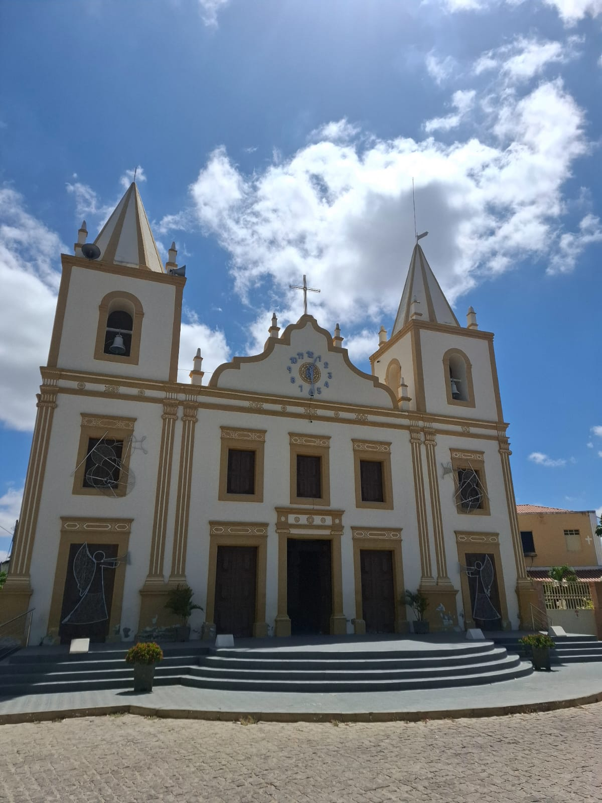
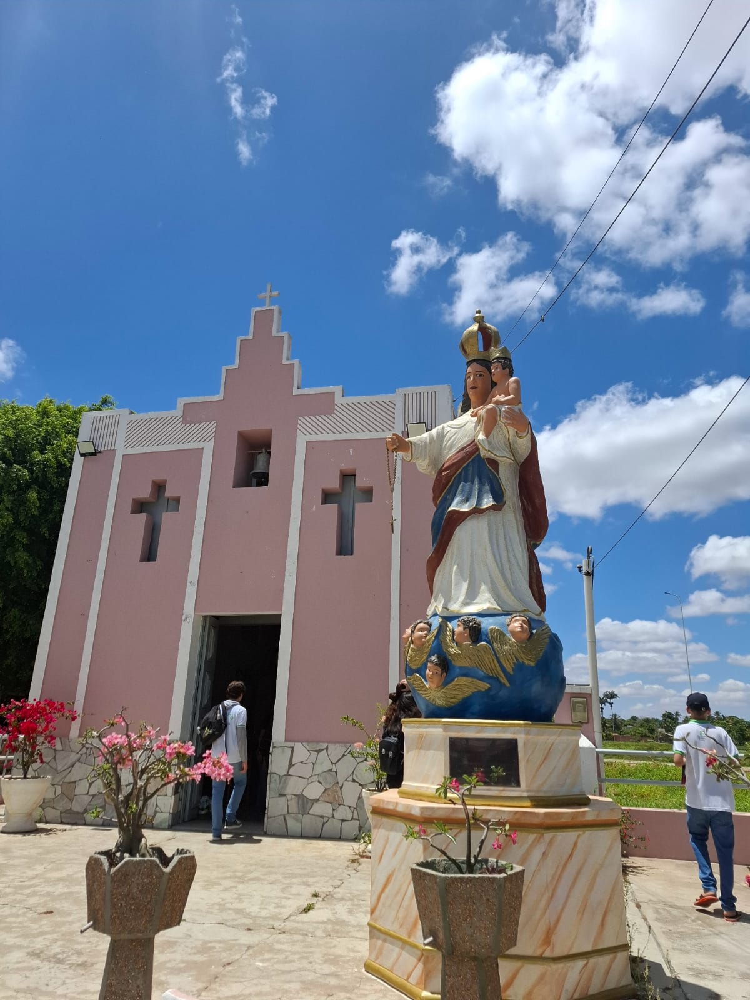

Igreja de Nossa Senhora da Imaculada Conceição
A Igreja de Nossa Senhora da Imaculada Conceição, localizada em Martins, no Rio Grande do Norte, é um marco histórico e religioso da cidade. Construída em 1876, destaca-se por sua arquitetura colonial simples, que reflete a tradição e a fé da comunidade local. Situada em um ponto elevado, oferece uma vista privilegiada das belas paisagens da região serrana. A igreja é palco de celebrações religiosas importantes, como a festa da padroeira, realizada em dezembro, que atrai fiéis e visitantes. Esse patrimônio cultural é um símbolo da devoção e da história de Martins.
Capela de Nossa Senhora do Rosário
A Capela de Nossa Senhora do Rosário, localizada em Martins-RN, é um importante símbolo histórico e religioso da cidade. Construída no século XIX, a capela reflete a forte devoção da comunidade católica local. Seu estilo arquitetônico simples e acolhedor remete ao período colonial, sendo um ponto de encontro para celebrações litúrgicas e eventos culturais. Além de sua relevância espiritual, a capela é um marco turístico, destacando-se por sua beleza e integração ao cenário encantador da cidade serrana. Ela testemunha a fé e a história de Martins, sendo preservada com carinho pelos moradores.
